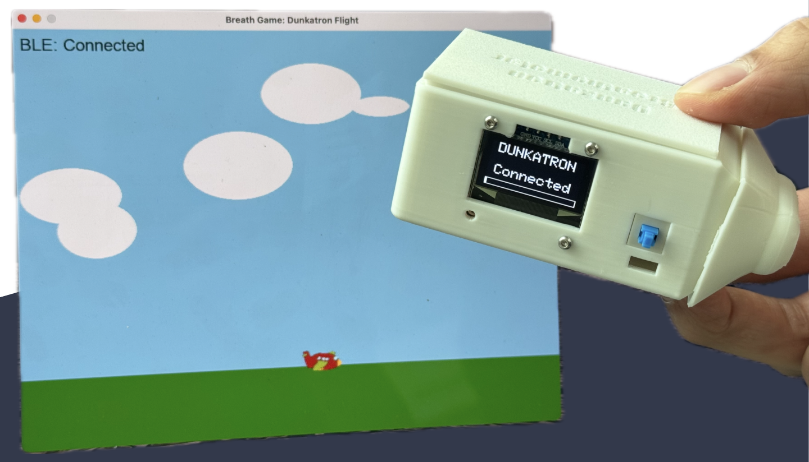
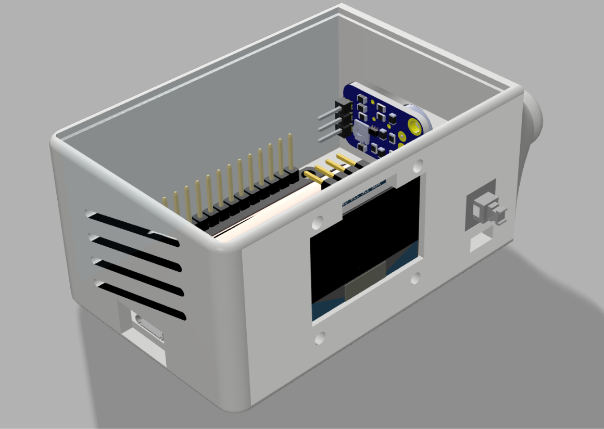
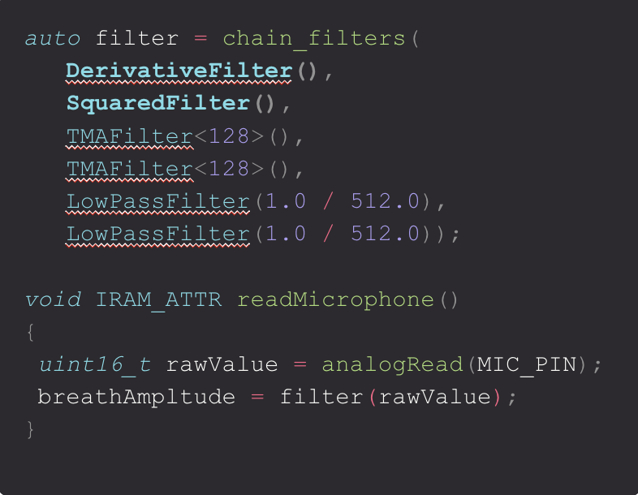

Dunkatron: Meditative Wireless Game Controller
Project Description
As a part of the 2025 Cornell Maker Club Makeathon, my friend Sam Belliveau and I designed and built the Dunkatron Breathometer in under 24 hours. The Dunkatron is a wireless game controller that uses a microcontroller and some nifty signal processing to measure the user's breathing rate, and then transmit that to a host computer via Bluetooth Low Energy (BLE). The controller features a compact 3D printed enclosure with swappable mouthpieces, an OLED display, a tactile power button and an ESP32 microcontroller for signal processing and wireless communication. The entire system is powered by a lithium-ion battery, which can easily be replaced.
We wanted to create a wireless breathing device that could be used to control a program on a computer. There are many health benefits of controlled breathing exercises, and a computer program measuring your breathing could help guide you through the process. In particular, we envisioned the system being used to alleviate stress or anxiety attacks through a meditative game.
To do this, we also created a simple game in Python using the Pygame library. The game is very similar to the classic game "Flappy Bird", where the player controls a character that must navigate through a series of obstacles. In our version, however, the character must simply maintain a steady altitude by controlling their breathing rate, incentivizing controlled, slow breaths. The game is designed to be simple and relaxing, with the goal of helping the player focus on their breathing and achieve a meditative state.
Signal Processing
To keep costs low, the breathing is detected with a microphone; However, past a certain strength of breathing, the amplitude clips, making it difficult to continue tracking strength. After investigating the issue, we noticed that the frequency of the microphone continued increasing the harder we blew. This made us realize that we could use the frequency of the microphone signal to track breathing strength, rather than the amplitude. We needed this signal processing to happen on our ESP32, as BLE does not have the bandwidth to transmit the full audio signal. With that being said, measuring frequency in real time is not a trivial task on such a small microcontroller.
We built a chainable filter library in c++ for this project that allowed us to quickly experiment with various filtering algorithms. We ended up using a derivative filter to process our samples. By using a Derivative Filter, which has a frequency response that increases linearly as the frequency increases, we can read higher values for higher frequencies. We found that this gave us a remarkably impressive reading for breathing strength, and made for intuitive game controls.
We could only send ~30 readings a second over our BLE connection. As a result, we needed to smooth out our amplitude measurements to cover all of the samples that happen over a span of time. By using 2 Timed Moving Averages and 2 Single Pole IIR Low Pass Filters, we are able to very quickly calculate a smoothed amplitude. In total, our filter is equivalent to doing a weighted average of the frequencies in the audio, but performed at a high speed.